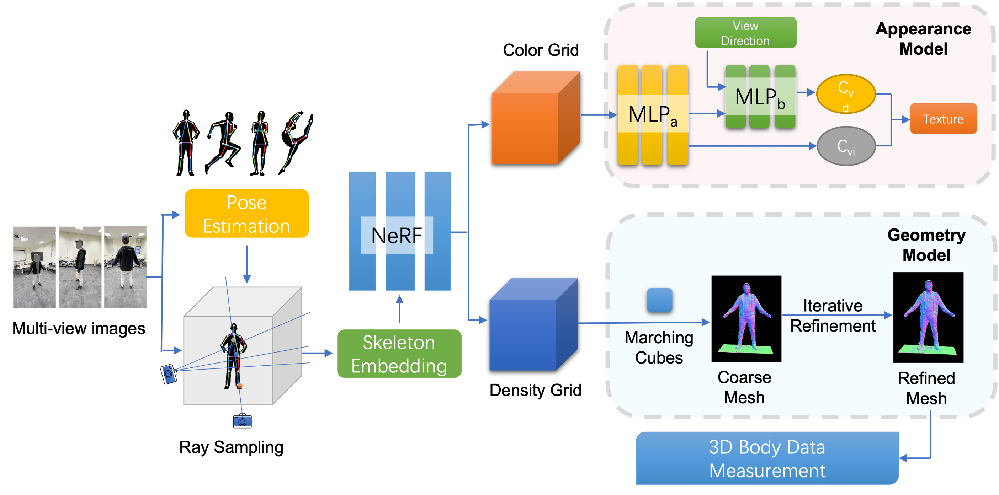
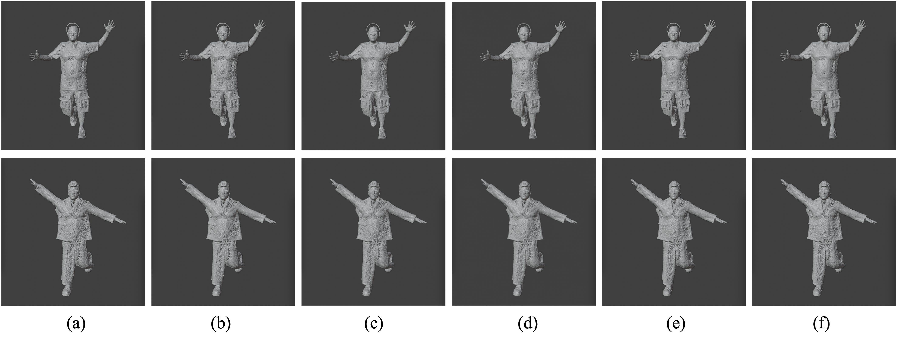

1 Department of Computer and Information Sciences, University of Delaware
2 Bellini College of Artificial Intelligence, Cybersecurity and Computing, University of South Florida
Abstract
We propose a novel framework for reconstructing anthropometrically accurate 3D human body meshes from multi-view RGB images, targeting applications in human analysis and vision-based understanding. While Neural Radiance Fields (NeRFs) have demonstrated impressive results in 3D reconstruction, their implicit representations are not directly compatible with standard 3D modeling workflows or downstream tasks.
Our method addresses this limitation by introducing a body-structure-guided NeRF that captures detailed geometry and appearance from multi-view imagery. From the learned NeRF, we extract spatial features to construct a coarse textured mesh, which is subsequently refined to achieve high anthropometric fidelity. Experimental results demonstrate that our approach generates high-quality textured meshes with precise human body geometry, outperforming existing methods in both visual realism and measurement accuracy.
Method
Our two-stage pipeline first trains a body-structure-guided NeRF from multi-view images, then extracts and refines an explicit textured mesh through differentiable rendering and iterative face-density optimization.

Figure 2. Overview of our framework. A NeRF is trained from multi-view human body images to obtain an implicit 3D representation. Color and density features are decomposed and processed by an appearance model and a geometry model. The refined human body mesh is then validated via 3D body measurement.
Skeleton pose embedding and silhouette supervision guide geometry learning, reducing ambiguity from complex articulations.
View-independent diffuse and view-dependent specular components are separated, enabling standard RGB texture export and real-time rendering.
Rendering-error-driven face subdivision and decimation adaptively improves mesh quality while reducing storage footprint.
Results
| Method | People Snapshot | SynBody |
|---|---|---|
| NeuS | 15.64 | 19.32 |
| NVdiffrec | 21.37 | 24.74 |
| Neural Body | 10.95 | 13.29 |
| HumanNeRF | 8.13 | 10.68 |
| Ours | 5.77 | 7.36 |
| Method | SSIM ↑ | PSNR ↑ | LPIPS ↓ |
|---|---|---|---|
| NVdiffrec | 0.921 | 20.91 | 0.083 |
| MobileNeRF | 0.937 | 24.52 | 0.079 |
| Neural Body | 0.941 | 25.88 | 0.073 |
| HumanNeRF | 0.943 | 26.49 | 0.070 |
| Ours | 0.949 | 27.85 | 0.066 |
Comparison of geometric reconstruction quality across methods. Our approach recovers body structures with higher fidelity especially in complex topology regions.

Figure 5. Geometric reconstruction quality comparison. (a) NeuS (b) NVdiffrec (c) Neural Body (d) HumanNeRF (e) Ours (f) Ground Truth. Our approach recovers body structures with higher fidelity, especially in complex topology regions.
We validate against ground-truth measurements from 5 real subjects collected via 3D scanner and tape measurement. Our method achieves 94.87% average accuracy with a coefficient of variation of only 7.18%, outperforming both SMPL-X (88.35%) and SHAPY (90.95%).
| Measurement | Ground Truth | Ours | SMPL-X | SHAPY |
|---|---|---|---|---|
| Head Width | 19.21±2.15 | 18.91±2.36 | 17.39±3.97 | 17.82±3.03 |
| Neck Width | 13.73±1.87 | 13.98±1.95 | 12.40±1.89 | 12.89±2.03 |
| Shoulder Width | 41.92±4.59 | 42.66±5.87 | 39.72±5.95 | 40.98±5.63 |
| Right Upper Arm | 31.38±3.97 | 31.96±4.19 | 29.03±4.47 | 30.58±4.36 |
| Right Thigh | 44.95±5.18 | 43.89±5.03 | 42.90±5.93 | 43.93±5.68 |
| Avg Accuracy | — | 94.87±6.81 | 88.35±8.93 | 90.95±7.67 |
| CoV (%) | — | 7.18 | 10.11 | 8.43 |
Citation
If you find our work helpful, please cite:
@inproceedings{liang2026anthropometrically, title = {Anthropometrically Accurate Human Mesh Reconstruction via Body-Structured NeRF for Vision-Based Analysis}, author = {Liang, Huining and Kambhamettu, Chandra}, booktitle = {2026 IEEE International Conference on Automatic Face and Gesture Recognition (FG)}, year = {2026}, organization = {IEEE} }